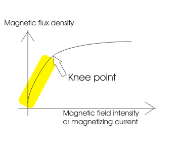

DC Servo Motor Theory
• Field Controlled Theory
• Armature Controlled Theory
• Permanent Magnet
As we know that any electrical motor can be utilized as servo motor if it is controlled by servomechanism. Likewise, if we control a DC motor by means of servomechanism, it would be referred as DC servo motor. There are different types of DC motor, such shunt wound DC motor, series DC motor, Separately excited DC motor, permanent magnet DC motor, Brushless DC motor etc. Among all mainly separately excited DC motor, permanent magnet DC motor and brush less DC motor are used as servo.
Types of DC Servo Motor
Separately Excited DC Servo Motor
DC Servo Motor Theory
The motors which are utilized as DC servo motors, generally have separate DC source for field winding and armature winding. The control can be archived either by controlling the field electric current or armature current. Field control has some specific advantages over armature control and on the other hand armature control has also some specific advantages over field control. Which type of control should be applied to the DC servo motor, is being decided depending upon its specific applications.
Let's discus DC servo motor working principle for field control and armature control one by one.
Field Controlled DC Servo Motor Theory
The figure below illustrates the schematic diagram for a field controlled DC servo motor. In this arrangement the field of DC motor is excited be the amplified error signal and armature winding is energized by a constant current source .
Field Controlled DC Servo Motor
The field is controlled below the knee point of magnetizing saturation curve. At that portion of the curve the mmf linearly varies with excitation current. That means torque developed in the DC motor is directly proportional to the field electric current below the knee point of magnetizing saturation curve.

From general torque equation of DC motor it is found that, torque T ∝ φIa. Where, φ is field flux and Ia is armature current. But in field controlled DC servo motor, the armature is excited by constant current source , hence Ia is constant here. Hence, T ∝ φ
As field of this DC servo motor is excited by amplified error signal, the torque of the motor i.e. rotation of the motor can be controlled by amplified error signal. If the constant armature electric current is large enough then, every little change in field electric current causes corresponding change in torque on the motor shaft.
The direction of rotation can be changed by changing polarity of the field.
The direction of rotation can also be altered by using split field DC motor, where the field winding is divided into two parts, one half of the winding is wound in clockwise direction and other half in wound in anticlockwise direction. The amplified error signal is fed to the junction point of these two halves of the field as shown below. The magnetic field of both halves of the field winding opposes each other. During operation of the motor, magnetic field strength of one half dominates other depending upon the value of amplified error signal fed between these halves. Due to this, the DC servo motor rotates in a particular direction according to the amplified error signal voltage.
The main disadvantage of field control DC servo motors, is that the dynamic response to the error is slower because of longer time constant of inductive field circuit. The field is an electromagnet so it is basically a highly inductive circuit hence due to sudden change in error signal voltage, the electric current through the field will reach to its steady state value after certain period depending upon the time constant of the field circuit. That is why field control DC servo motor arrangement is mainly used in small servo motor applications.
The main advantage of using field control scheme is that, as the motor is controlled by field - the controlling power requirement is much lower than rated power of the motor.
Armature Controlled DC Servo Motor Theory
The figure below shows the schematic diagram for an armature controlled DC servo motor. Here the armature is energized by amplified error signal and field is excited by a constant current source .
Armature Controlled DC Servo Motor
The field is operated at well beyond the knee point of magnetizing saturation curve. In this portion of the curve, for huge change in magnetizing current, there is very small change in mmf in the motor field. This makes the servo motor is less sensitive to change in field current. Actually for armature controlled DC servo motor, we do not want that, the motor should response to any change of field current.
Again, at saturation the field flux is maximum. As we said earlier, the general torque equation of DC motor is, torque T ∝ φIa. Now if φ is large enough, for every little change in armature electric current Ia there will be a prominent changer in motor torque. That means servo motor becomes much sensitive to the armature current.
As the armature of DC motor is less inductive and more resistive, time constant of armature winding is small enough. This causes quick change of armature electric current due to sudden change in armature voltage. That is why dynamic response of armature controlled DC servo motor is much faster than that of field controlled DC servo motor.
The direction of rotation of the motor can easily be changed by reversing the polarity of the error signal.
Permanent Magnet DC Servo Motor
Field control is not possible in the case of permanent magnet DC motor as the field is a permanent magnet here. DC servo motor working principle in that case is similar to that of armature controlled motor.
 by
by